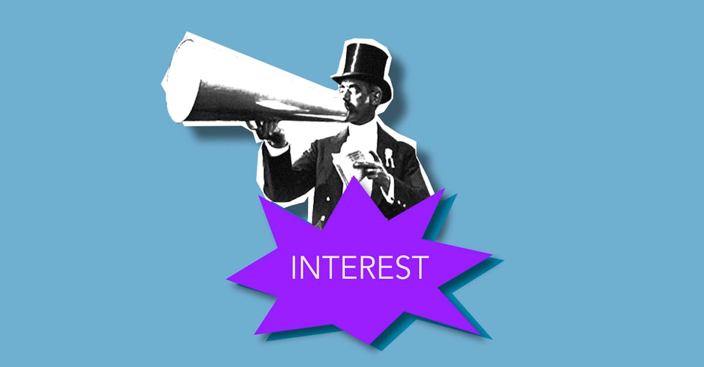
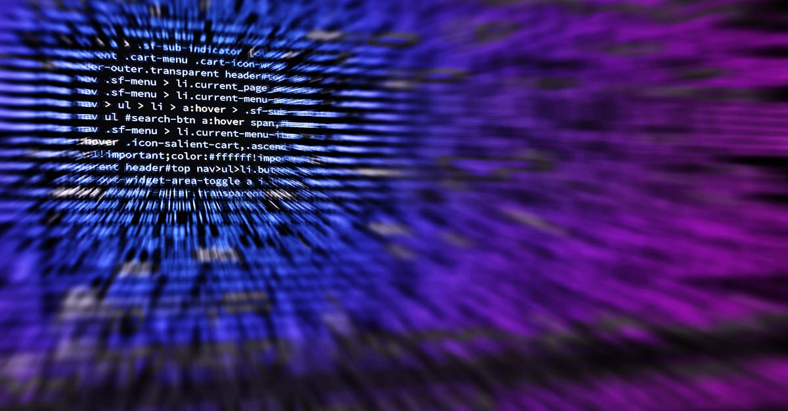

Chiliz : Un Acteur Majeur des Fan Tokens se Réinvente
L'univers des cryptomonnaies est en perpétuelle évolution, et Chiliz, un pionnier dans le domaine des fan tokens, ne fait pas exception. Connue pour avoir propulsé la popularité des tokens de supporters pour des clubs de football de renom tels que le Paris Saint-Germain ou Manchester City, Chiliz a annoncé une transition stratégique majeure. Lancé en 2023, son propre réseau Layer-1, CHZ 2.0, visait à centraliser et optimiser le trading de ses actifs numériques. Cependant, l'entreprise adopte désormais une approche plus ouverte et interconnectée, baptisée "omnichain distribution". Cette nouvelle orientation s'appuie sur l'expansion de son écosystème vers des blockchains populaires comme Solana et Base, une solution de mise à l'échelle de Coinbase. L'objectif ? Amplifier l'accessibilité et la liquidité des fan tokens, tout en capitalisant sur la ferveur entourant des événements mondiaux, notamment la Coupe du Monde. Cette décision audacieuse vise à tirer parti de la vitesse et des faibles coûts de transaction de ces nouvelles plateformes, tout en offrant aux fans une expérience plus fluide et intégrée. Le passage à une distribution omnichaîne n'est pas qu'un simple changement technique ; c'est une réaffirmation de la vision de Chiliz : rapprocher les fans de leurs équipes favorites grâce à la technologie blockchain, tout en ouvrant de nouvelles voies pour l'innovation et l'engagement dans l'écosystème crypto.
👉 À lire : XRP : Le Triangle se Resserre, une Explosion à Venir ?

L'Intégration de Solana et Base : Pourquoi Ces Choix Stratégiques ?
Le choix de Solana et de Base n'est pas fortuit. Solana, reconnue pour son architecture à haut débit et ses faibles frais de transaction, offre une plateforme idéale pour gérer un volume potentiellement croissant d'interactions liées aux fan tokens. Sa rapidité d'exécution et sa capacité à traiter des milliers de transactions par seconde sont des atouts indéniables dans un marché où la réactivité est primordiale. Imaginez des millions de fans cherchant à acquérir ou échanger des tokens lors d'un événement sportif majeur ; Solana pourrait potentiellement absorber cette demande sans les congestions observées sur d'autres réseaux. De son côté, Base, développée par le géant Coinbase, bénéficie d'une confiance accrue et d'une intégration native avec l'un des plus grands échanges de cryptomonnaies au monde. Cela facilite non seulement l'accès pour les utilisateurs familiers de Coinbase, mais promet également une expérience utilisateur simplifiée et sécurisée. L'approche "omnichain" de Chiliz signifie que les fan tokens, initialement conçus pour leur propre réseau, pourront désormais être échangés et utilisés de manière transparente sur Solana et Base. Cette interopérabilité est cruciale. Elle permet de débloquer de nouvelles liquidités, d'atteindre un public plus large et d'offrir une flexibilité sans précédent aux détenteurs de tokens. En somme, Solana et Base représentent des extensions logiques pour Chiliz, offrant des avantages technologiques et une portée accrue, essentiels pour sa stratégie de croissance future.
👉 À lire : Coinbase teste des agents IA : le futur du trading crypto ?
La "Omnichain Distribution" : Une Nouvelle Ère pour les Fan Tokens
Le concept d'"omnichain distribution" promu par Chiliz marque une évolution significative par rapport à une approche monoréseau. Plutôt que de confiner les fan tokens à leur blockchain native, Chiliz cherche à les rendre disponibles et utilisables sur plusieurs réseaux blockchain interconnectés. Qu'est-ce que cela implique concrètement ? Cela signifie qu'un fan token, par exemple celui du FC Barcelone, pourrait être émis sur le réseau Chiliz, mais ensuite migré, échangé ou utilisé sur Solana, Base, et potentiellement d'autres blockchains compatibles à l'avenir. Cette stratégie présente plusieurs avantages majeurs. Premièrement, elle accroît considérablement la liquidité. En rendant les tokens accessibles sur des réseaux plus actifs et diversifiés, Chiliz augmente les chances de trouver des acheteurs et des vendeurs, réduisant ainsi les écarts de prix et facilitant les transactions. Deuxièmement, elle améliore l'expérience utilisateur. Les fans n'ont plus besoin de naviguer sur des plateformes multiples et potentiellement complexes. Ils peuvent interagir avec leurs tokens sur les environnements blockchain qu'ils connaissent et préfèrent. Troisièmement, cette approche favorise l'innovation. Les développeurs sur Solana ou Base pourraient intégrer ces fan tokens dans de nouvelles applications décentralisées (dApps), créant ainsi de nouveaux cas d'usage au-delà du simple vote ou de l'accès à des avantages exclusifs. C'est une vision ambitieuse qui vise à intégrer les fan tokens plus profondément dans le tissu de l'écosystème Web3.

Impact sur le Trading de Cryptomonnaies et l'IA
L'expansion de Chiliz et sa stratégie omnichaîne ont des implications directes et indirectes pour le trading de cryptomonnaies, y compris pour les stratégies basées sur l'intelligence artificielle. L'augmentation de la liquidité et de l'accessibilité des fan tokens sur des réseaux plus performants comme Solana et Base peut générer de nouvelles opportunités de trading. Ces tokens, souvent liés à des événements sportifs ou culturels, peuvent connaître des fluctuations de prix importantes, offrant des terrains de jeu intéressants pour les traders algorithmiques. Les agents IA spécialisés dans le trading crypto, comme ceux que nous développons chez CryptoMind AI, peuvent analyser ces dynamiques complexes. Ils sont capables de traiter d'énormes volumes de données en temps réel : tendances du marché, sentiment des réseaux sociaux, actualités sportives, et données on-chain. L'intégration des fan tokens sur de nouvelles blockchains élargit le champ d'analyse. Les algorithmes peuvent désormais prendre en compte la performance sur Solana, les frais sur Base, et les interactions on-chain sur plusieurs réseaux simultanément. Cette approche omnichaîne rend l'analyse plus complexe mais aussi plus riche. Les agents IA peuvent identifier des opportunités d'arbitrage entre les différentes plateformes, prédire l'impact d'événements spécifiques sur la valeur des tokens, ou encore optimiser les stratégies d'entrée et de sortie en fonction de la volatilité accrue. La capacité de ces agents à opérer 24h/24 et 7j/7, sans biais émotionnel, devient un avantage compétitif indéniable dans ce nouvel environnement multi-chaînes.
La Coupe du Monde : Un Catalyseur Potentiel pour l'Adoption
L'annonce de Chiliz intervient à un moment opportun, alors que l'engouement autour des événements sportifs majeurs, et en particulier la Coupe du Monde, atteint des sommets. Les fan tokens ont toujours été intrinsèquement liés à la performance et à l'attrait des équipes et des compétitions qu'ils représentent. Une Coupe du Monde, réunissant des milliards de fans à travers le globe, constitue une plateforme idéale pour démontrer la valeur et le potentiel des fan tokens. En rendant ces tokens plus accessibles et plus faciles à échanger sur des réseaux comme Solana et Base, Chiliz se positionne pour capter une part significative de cet intérêt accru. Imaginez des fans, galvanisés par les performances de leur équipe nationale, cherchant à acquérir le fan token associé pour accéder à des contenus exclusifs, des droits de vote, ou simplement pour afficher leur soutien. L'expansion omnichaîne de Chiliz permettrait à ces fans d'effectuer ces transactions rapidement et à faible coût, quel que soit le réseau qu'ils utilisent. Cela pourrait se traduire par une augmentation spectaculaire du volume de trading et de l'adoption des fan tokens. Pour les plateformes comme Solana et Base, c'est une opportunité d'attirer de nouveaux utilisateurs et de démontrer la robustesse de leur infrastructure. La synergie entre un événement mondial majeur et une technologie blockchain innovante pourrait bien marquer un tournant pour l'industrie des fan tokens et l'engagement des supporters.

Défis et Opportunités pour l'Écosystème Chiliz
Malgré l'enthousiasme suscité par cette expansion, Chiliz fait face à plusieurs défis. La complexité technique de la gestion d'une stratégie omnichaîne est non négligeable. Assurer une synchronisation parfaite et une sécurité sans faille entre différents réseaux blockchain exige une ingénierie sophistiquée. Les risques liés aux ponts inter-chaînes (bridges), souvent cibles de piratages, devront être gérés avec la plus grande rigueur. De plus, la concurrence dans l'espace des fan tokens et des plateformes de supporters ne cesse de croître. D'autres projets pourraient émerger ou adapter leurs stratégies pour rivaliser avec l'offre de Chiliz. L'adoption par les utilisateurs reste également un facteur clé. Bien que Solana et Base soient populaires, attirer une masse critique de fans et de clubs sur ces nouvelles plateformes nécessitera des efforts marketing et une proposition de valeur claire. Cependant, les opportunités sont immenses. Une exécution réussie de la stratégie omnichaîne pourrait positionner Chiliz comme le standard de facto pour les fan tokens dans le Web3. L'interopérabilité accrue pourrait débloquer des cas d'usage innovants, comme la création de communautés de fans véritablement globales et interconnectées. L'entreprise pourrait également étendre son modèle à d'autres domaines que le sport, comme la musique ou le divertissement, capitalisant sur sa technologie éprouvée. Le succès dépendra de sa capacité à naviguer ces défis tout en saisissant les opportunités uniques offertes par l'écosystème omnichaîne.
L'Avenir des Fan Tokens : Vers une Intégration Profonde ?
L'initiative de Chiliz ouvre la voie à une réflexion plus large sur l'avenir des fan tokens. Au-delà de la simple spéculation ou de l'accès à des avantages basiques, on peut envisager une intégration beaucoup plus profonde des fan tokens dans l'écosystème du divertissement et du sport. Que se passera-t-il lorsque les fan tokens permettront non seulement de voter pour le prochain maillot, mais aussi de participer à la stratégie marketing d'un club, de co-créer du contenu exclusif, ou même d'obtenir des parts dans des projets dérivés ? La technologie blockchain, soutenue par des réseaux performants comme Solana et Base, et potentiellement optimisée par des outils d'IA pour l'analyse et la gestion, offre des possibilités vertigineuses. L'approche omnichaîne de Chiliz est une étape logique vers cet avenir où les frontières entre les mondes physique et numérique s'estompent. Les fans ne seront plus de simples spectateurs, mais des acteurs à part entière, participant activement à la vie de leurs communautés et de leurs équipes favorites. Cette démocratisation de l'engagement pourrait redéfinir la relation entre les organisations et leurs supporters, créant des liens plus forts et plus durables. L'IA pourrait jouer un rôle clé dans la personnalisation des expériences, l'analyse du sentiment communautaire, et même dans la facilitation de la gouvernance décentralisée.
Pourquoi les Traders Crypto Doivent Suivre Chiliz
Pour les traders actifs dans l'espace crypto, suivre les développements de Chiliz est devenu essentiel. Pourquoi ? Premièrement, la volatilité inhérente aux fan tokens, exacerbée par les événements sportifs et culturels, présente des opportunités de trading à court terme. Les annonces stratégiques comme celle-ci peuvent déclencher des mouvements de prix significatifs, que des algorithmes comme ceux de CryptoMind AI sont conçus pour exploiter. Deuxièmement, l'adoption de réseaux comme Solana et Base signifie une augmentation potentielle du volume de transactions. Plus il y a de transactions, plus il y a de liquidité, et plus il est facile d'exécuter des ordres, ce qui est crucial pour les stratégies de trading à haute fréquence ou basées sur l'arbitrage. Troisièmement, la stratégie omnichaîne de Chiliz est un cas d'étude fascinant sur l'interopérabilité blockchain. Comprendre comment les actifs peuvent migrer et être utilisés sur différents réseaux est une compétence clé dans le paysage Web3 actuel. Les agents IA peuvent analyser les flux de capitaux entre les chaînes, identifier les inefficacités et adapter les stratégies en temps réel. Enfin, le succès de Chiliz pourrait valider le modèle des fan tokens à grande échelle, attirant potentiellement plus de capitaux institutionnels et retail dans ce sous-secteur spécifique des cryptomonnaies. Ignorer ces développements, c'est passer à côté d'un segment de marché dynamique et potentiellement lucratif, surtout pour ceux qui utilisent des outils d'analyse avancés et des stratégies automatisées fonctionnant 24h/24.
Conclusion : L'Omnichaîne, le Futur des Tokens d'Engagement ?
L'annonce de Chiliz d'étendre son écosystème de fan tokens à Solana et Base, sous l'égide d'une stratégie "omnichain distribution", représente bien plus qu'une simple mise à jour technique. C'est un pas audacieux vers une plus grande interopérabilité, accessibilité et liquidité dans le monde des tokens d'engagement. En tirant parti des forces de Solana pour la vitesse et de Base pour l'intégration avec Coinbase, Chiliz se positionne stratégiquement pour capitaliser sur l'effervescence des événements mondiaux, comme la prochaine Coupe du Monde. Pour les fans, cela signifie une expérience plus fluide et plus accessible pour interagir avec leurs équipes favorites. Pour les traders crypto, et particulièrement pour les utilisateurs d'agents IA comme ceux de CryptoMind AI, cela ouvre de nouvelles avenues d'analyse et d'opportunités de trading, grâce à la volatilité accrue et à la complexité des flux inter-chaînes. Si les défis liés à la sécurité et à l'adoption demeurent, le potentiel de cette approche est indéniable. L'omnichaîne pourrait bien devenir le nouveau paradigme pour tous les types de tokens d'engagement, redéfinissant la relation entre les créateurs, les communautés et leurs supporters dans l'ère du Web3. L'avenir s'annonce passionnant, et Chiliz est, sans aucun doute, à l'avant-garde de cette révolution.